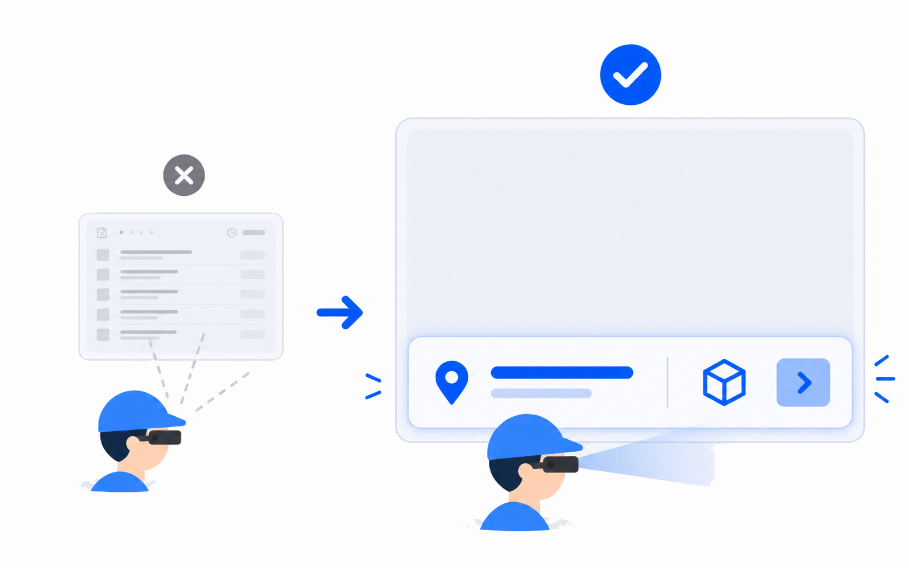
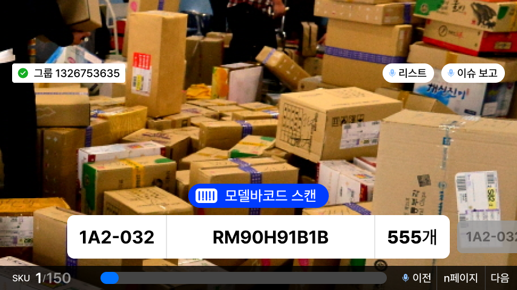
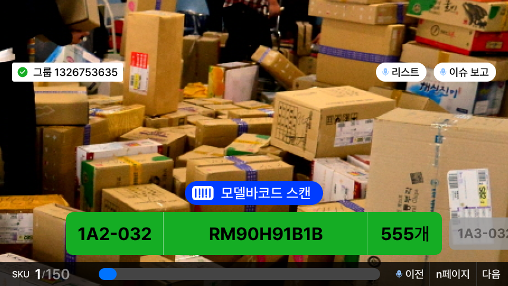
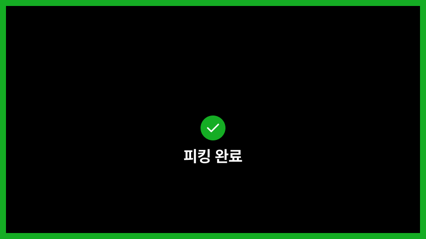
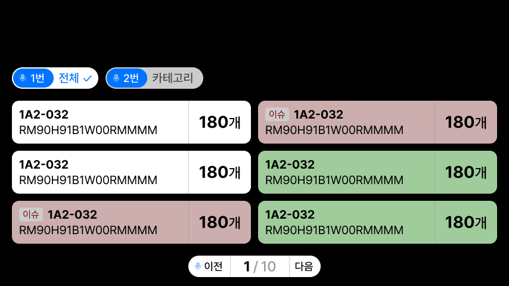
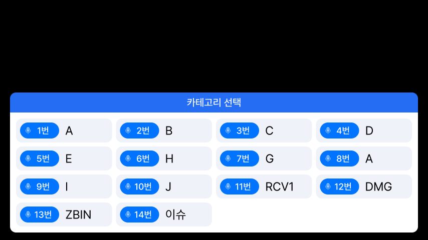
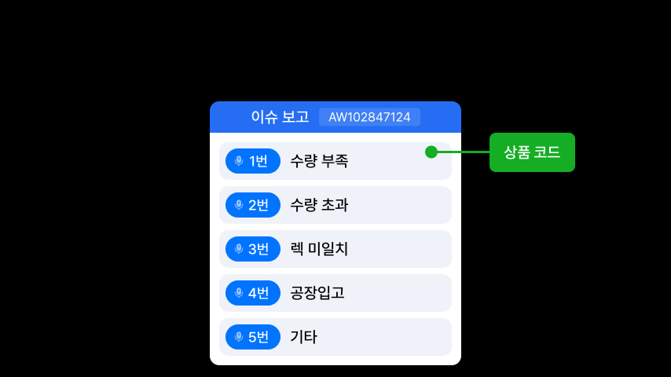

화면을 결정할 때 확인
고객사별로 바뀌는 용어, 순서, 색상 분리
표시 필드와 필드 우선순위 확정
발화가 보조인지 필수 인터랙션인지 결정
이 화면이 작업 지시인지, 선택인지, 완료 상태인지 정의
카메라 배경이 필요한지 먼저 판단
내부 실무용 디자인 시스템
기획/디자이너는 화면 판단 기준을 훑고, 개발자는 토큰과 컴포넌트 값을 바로 가져갈 수 있도록
정리한 실무형 디자인 시스템 페이지입니다.
고객사별로 바뀌는 용어, 순서, 색상 분리
표시 필드와 필드 우선순위 확정
발화가 보조인지 필수 인터랙션인지 결정
이 화면이 작업 지시인지, 선택인지, 완료 상태인지 정의
카메라 배경이 필요한지 먼저 판단
안전 여백: 상단 80px, 하단 15px, 좌우 20px 이상
토큰: 색상, 폰트, 간격, 상태값 복사
컴포넌트: 작업 지시 필, 대상 데이터 카드, 발화 명령 칩, 리스트 항목
상태 색상: 성공 초록, 오류 빨강, 선택 파랑
선택 UI: 카메라 OFF, 검은 배경, 발화 명령 표시
피킹과 재고조사뿐 아니라 모든 물류용 스마트글라스 화면에 적용하는 기본 판단 기준입니다.
01
현재 수행할 작업만 주요 정보로 강조하여 표시하고,
완료된 단계는 화면에서 제거하여 지금 해야 할 하나에 대한 집중을 유도합니다.

02
완료된 작업 내역은 강조 영역에 두지 않고, 필요할 때 보조 영역에서 확인 가능하게 하여
의도치 않은 이전 단계 복귀를 방지합니다.
03
작업 중 가장 잘 보이는 하단 중앙에는 즉시 확인해야 하는 핵심 UI 배치합니다. 안전모 착용 시 하단 영역이 더 안정적으로 보일 수 있습니다. 상시 확인이 필요 없는 보조 정보는 상단 중앙에 배치합니다.
04
자동 화면 전환, 오인식 상황을 줄이기 위해
성공과 실패를 시각(색상 변화, 상태 메시지)과 청각(효과음, 음성 안내) 두 채널로 동시 전달하여
어떤 작업 환경에서든 피드백 누락 방지
05
상시 노출되는 작업 정보는 1줄 핵심 + 1줄 보조를 권장하며, 필요한 경우에만 3줄을 사용합니다.
정보와 UI 요소를 과도하게 담지 않고, 작업에 필요한 최소 정보만 노출합니다.
06
실제 표시 정보(BIN, SKU, 모델명 등), 주요 컬러는 프로젝트별로 정의합니다.
토큰명은 텍스트를 클릭해 바로 복사할 수 있습니다.
프로젝트별 브랜드 컬러는 변경 가능하지만 상태 색상은 일관성을 우선합니다.
| 유형 | 사용처 | 토큰 | 값 |
|---|---|---|---|
| Surface | 행동 지시(바코드 스캔) | color/background/primary-scan | #003CFF |
| Surface | 중요(활성 상태, 발화 버튼) | color/background/primary | #0073FF |
| Surface | 보조(발화 아이콘) | color/background/primary-subtle | #90C2FF |
| Surface | 정보, 서브 버튼 | color/background/white | #FFFFFF |
| Surface | 카메라 OFF | color/background/black | #000000 |
| Surface | 서브 정보 | color/background/gray-overlay | #000000 80% |
| Surface | 어두운 배경 위 그레이 | color/background/gray-dark | #444444 |
| Surface | 어두운 배경 위 비활성화 | color/background/gray-disabled-dark | #666666 |
| Surface | 밝은 배경 위 비활성화 | color/background/gray-disabled-bright | #CCCCCC |
| Surface | 밝은 배경 위 그레이 | color/background/gray-bright | #EFF2F8 |
| Surface | 완료, 성공 | color/background/status-success | #12B52A |
| Surface | 화면에 Primary 컬러가 많을 때, 다중 선택된 선택지 | color/background/status-success-selected | #C8FFC3 |
| Surface | 주의, 확인 필요 | color/background/status-warning | #F59E0B |
| Surface | 오류, 중단 | color/background/status-error | #F04438 |
| Surface | 이슈, 확인 필요 카드 | color/background/status-issue | #D8B4B7 |
| line | 밝은 배경 위 디바이더 | color/line/basic | #CCCCCC |
| line | 어두운 배경 위 디바이더 | color/line/dark | #444444 |
| line | 컬러 배경 위 디바이더 | color/line/overlay-bright | #000000 50% |
| line | 성공 | color/line/status-success | #12B52A |
| line | 주의, 확인 필요 | color/line/status-warning | #F59E0B |
| line | 오류, 중단 | color/line/status-error | #F04438 |
| line | 이슈, 확인 | color/line/status-issue | #D8B4B7 |
| text | 밝은 화면 위 주요 정보 | color/text/black | #000000 |
| text | 흰색 또는 프라이머리 위 서브 정보 | color/text/primary-subtle | #90C2FF |
| text | 비활성화, 서브 정보 | color/text/disabled | #999999 |
| text | 어두운 화면 위 정보 | color/text/white | #FFFFFF |
| text | 성공, 완료 | color/text/status-success | #12B52A |
| text | 주의, 확인 필요 | color/text/status-warning | #F59E0B |
| text | 오류, 중단 | color/text/status-error | #F04438 |
화면 색상 비율은 60-30-10 원칙을 참고합니다.
배경/Surface 계열을 약 60%, 보조 영역을 약 30%, Primary 또는 Accent 컬러는 약 10% 내외로 제한해 핵심 액션과 강조 요소에 사용합니다.
단, UI 특성상 Primary 컬러는 브랜드 면적보다 CTA, 선택 상태, 주요 인터랙션 요소 중심으로 적용합니다.
| 유형 | 토큰 | 사용처 | 폰트 사이즈 | 두께 |
|---|---|---|---|---|
| Common | font/family/base | 기본 폰트 | Pretendard | — |
| Primary | font/Primary/lg |
주 작업 정보 | 30px | 800 |
| Primary | font/Primary/md |
중형 주요 정보 | 28px | 800 |
| Primary | font/Primary/sm |
소형 주요 정보 | 24px | 800 |
| Sub | font/Sub/lg |
서브 정보 | 24px | 600 |
| Sub | font/Sub/md |
중형 서브 정보 | 20px | 600 |
| Sub | font/Sub/sm |
소형 서브 정보 | 18px | 600 |
| Sub | font/Sub/caption |
캡션, 보조 상태 | 16px | 600 |
| Instruction | font/instruction/main | 주요 지시 | 24px | 600 |
| Button | font/button/main | 주요 버튼 | 20px | 600 |
| Button | font/button/sub | 서브 버튼 | 18px | 600 |
간격은 4배수를 기본으로 사용합니다. 필요 시 2배수 예외를 추가할 수 있습니다.
| 유형 | 토큰 | 사용처 | 값 |
|---|---|---|---|
| safe | safe/top | 모든 화면 상단 여백 | 80px |
| safe | safe/bottom | 모든 화면 하단 여백 | 15px |
| safe | safe/side | 모든 화면 좌우 여백 | 20px |
| radius | radius/container | 외곽 Radius | 12px |
| radius | radius/toast | 토스트, pill 버튼 Radius | 999px |
| space | space/padding/ui | UI 내부 패딩 | 8, 12, 16, 20px |
| space | space/padding/icon-pill | 아이콘 포함 pill의 아이콘 앞뒤 패딩 | 12, 12, 20px / 8, 2, 12px |
주요 작업 정보는 하단 중앙을 우선합니다.
상단과 좌우는 보조 정보 영역이며, 중앙은 즉시 인지가 필요한 상태에만 제한적으로 사용합니다.
카메라가 필요한 작업 화면과 카메라를 꺼야 하는 선택 화면을 명확히 구분합니다.
작업 지시, 스캔, 위치 이동, 상품 확인처럼 현장 시야가 필요한 화면.
업무 선택 화면. 카메라 배경을 사용하지 않고 브랜드 색상을 적용할 수 있음.
리스트, 카테고리 선택, 이슈 보고처럼 선택지 비교가 필요한 화면.
전체 프로세스 완료처럼 명확한 상태 전환을 알려야 하는 화면.
실제 화면에서 반복되는 HUD 요소를 컴포넌트 단위로 정리했습니다.
하단 중앙에 놓는 단일 작업 지시. 짧은 액션 문구만 표시합니다.
현재 작업 대상의 핵심 데이터를 한 줄로 표시합니다. 필드 구성은 프로젝트별 정의입니다.
발화해야 하는 값과 라벨을 함께 표시합니다. 선택 화면에서 필수로 사용합니다.
할당량이 정해진 작업에만 표시합니다. 핵심 작업 지시보다 강하게 보이지 않게 합니다.
정상/완료는 초록, 이슈/주의는 분홍 또는 붉은 계열로 구분합니다.
단일 액션은 짧은 피드백, 전체 완료는 별도 상태 화면으로 분리합니다.
선택지가 있는 화면은 발화를 기본 선택 방식으로 봅니다.
화면에는 실제로 말해야 하는 명령어를 표시합니다.
| 명령어 | 의미 | 화면 표시 |
|---|---|---|
| 1번 | 첫 번째 항목 선택 | 1번 전체 |
| 다음 | 다음 페이지 또는 다음 항목 | 다음 |
| 이슈 보고 | 현재 대상의 이슈 보고 진입 | 이슈 보고 |
아래 이미지는 Figma 피킹 화면에서 가져온 실제 예시입니다.
예시는 화면 패턴 설명용이며, 표시 필드는 고객사별로 변경됩니다.
작업 시작 전 단일 스캔 액션만 하단 중앙에 표시합니다.

현재 대상 데이터는 하단 중앙, 리스트와 이슈 보고는 보조 액션으로 배치합니다.

기존 작업 구조를 유지한 채 초록색 짧은 피드백으로 처리합니다.

전체 프로세스가 끝났을 때는 검은 배경 상태 화면을 사용합니다.

리스트는 후순위 확인 수단이며, 카메라 없이 검은 배경에서 비교합니다.

번호와 라벨을 함께 표시해 작업자가 그대로 발화할 수 있게 합니다.

보고 대상 식별값과 이슈 사유 선택지를 분리해 표시합니다.
AI에게 새 화면을 만들게 할 때 아래 구조를 함께 전달합니다.
업무 유형:
화면 유형:
배경 유형:
표시 필드:
필드 우선순위:
기본 입력 방식:
발화 명령어:
완료/오류 상태:
고객사 브랜드 컬러: